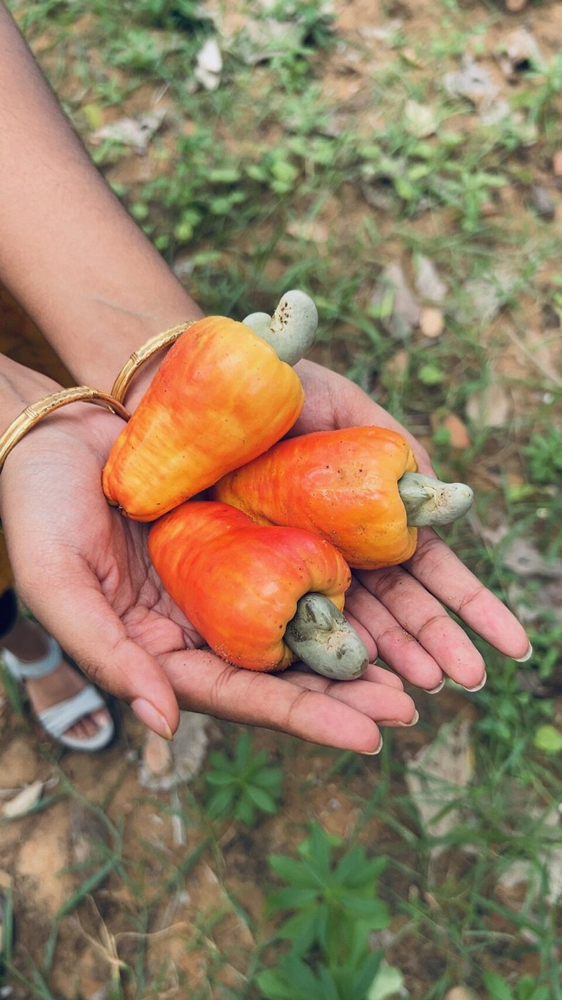
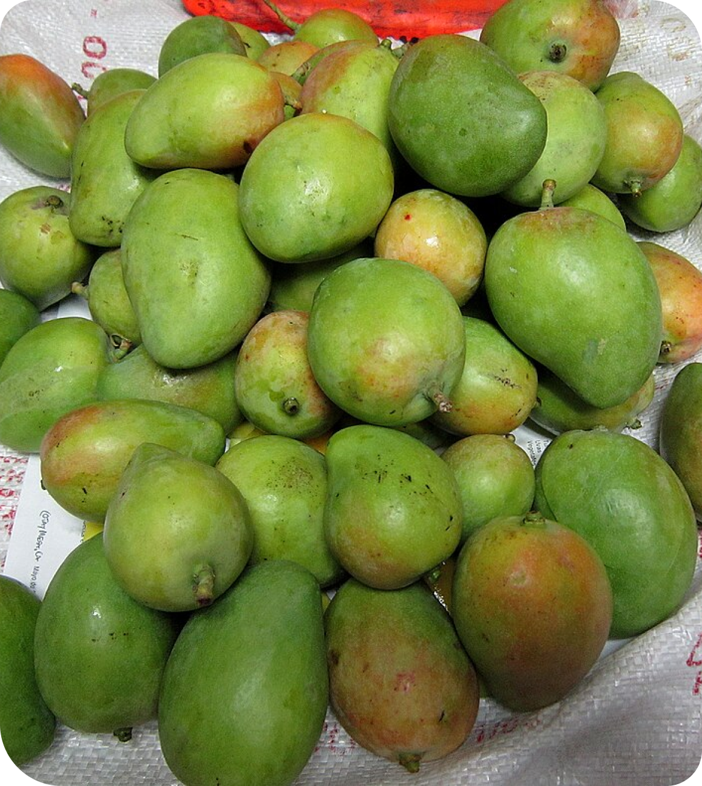
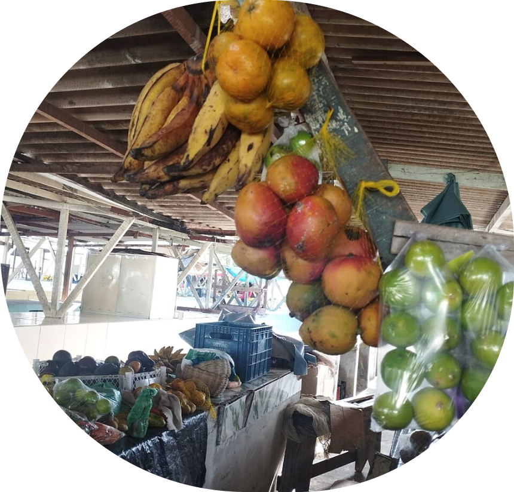

Lotes de fruta fora do padrão estético, direto do produtor, para indústrias de suco, polpa, sorvete e doce.
Criar conta Lotes na feira47 lotes anunciados por produtores de 9 estados. Preço por quilo, retirada no sítio
O preço do lote é do produtor. O comprador paga 10% a mais e o vendedor recebe o valor do lote menos 5%.
Sítio, fazenda ou cooperativa.
Tira foto do lote do jeito que ele está,com mancha e tudo.
Diz quantos quilos tem, o preço e até quando dá pra retirar.
O pagamento já está garantido quando o caminhão chega.

Suco, polpam sorvete, doce ou geleia.
Escolhe fruta, região, quantidade e o defeito que não atrapalha a produção.
Fecha o pedido no pix. O produtor confirma em até 24 horas.
O caminhão busca no sítio, no dia e no horário combinado.

O produtor fotografa a fruta como ela está. O defeito aparece na foto e na descrição
O dinheiro só vai para o produtor quando ele confirma a retirada no sítio com o código do seu pedido.
Cada venda sai com nota fiscal de produtor rural, pronta para a sua contabilidade.
Produtor anuncia de graça e recebe o valor do lote menos 5%. O comprador paga 10% a mais.
Criar conta Falar no WhatsApp
